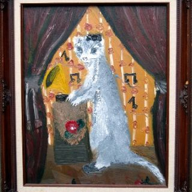
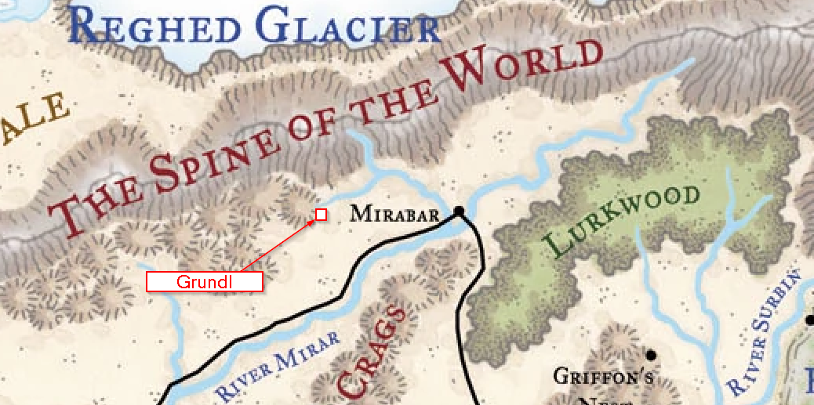

Welcome to the BooBah DND homepage. The purpose of this site is to track the exploits of your adventuring party
and provide information about the world they explore.
Below are the chronicles of the party's exploits:
The crew makes Dothmar collect the 15 silvered weapons and head to the surface of Mirabar
to obtain their wagon for the trip. Before heading to the coachhouse they stop at a magic
and potion shop. Dothmar buys a Love Potion from Freezie, the gnome proprietor. Quatzl
buys a potion of lesser restoration, and exchanges urine (potion of thirst quenching) for
a sample of Dream Aid. Meanwhile Helm buys shield of arrow catching, a map to a tomb of a long
dead cleric in the Anuarach desert, and a Claw Bank from
Franklin, the merchant at Marvin's Wares (Magical). Yugio buys a scroll of disguise self.
At the coachhouse Qautlz irritates the cleric and stable hand by asking about having
a two-humped horse for the wagon, since the sign for the coach house (Two Dollop Coachhouse)
has a dromedary on it. Instead a pair of horses are provided, along with a covered wagon. Helme
withdraws 120 sp, and 1 gp from the clawed hand.
On their way to the mine, 8 days away, the party is attacked by shadows on the first night. Helm
learns this is from the Claw Bank not being paid back and she decides to get out of debt after
the shadows are easily killed. Once they get to the Lurkwood the party hustles and makes it to
the mine in the dark. The dwarves are wary but Qautlz drinks some silvered-water to prove they
are friends and the party is welcomed.
In the moring the party breakfasts with the dwarves and regail them with a tale of heroism.
After breakfast the party joins the dwarves in testing the new silvered weapons out on a
werewolf trapped behind a boulder in one of the passages. Dothmar slices it good and Helm
decides to devastate the wolf-man with nasty touch on the hand. Shortly after it falls to many
blows from the dwarves. Quatzl sneaks off during the fight and hopes to find some drama or plunder
in the overseer Baldwin Slateface's chamber, but finds nothing of value except a copper award for
excellence from the Mirabar Miner's Guild.
The party now has to find the wood elves and get the sleeping drug, haedrar to
complete their tasks in Lurkwood.
The gang decides to take on a mercenary group that double-crossed Broglyn known as "The Chill".
They learn that the group only accepts monstrous adventurers into their ranks, and that they
hang at bar which sells powerful brews called Melanin's on the Third Below. The party picks
up an ally called Priscilla who knows the location of Melanin's and who want to be an adventurer.
Finding the bar is no problem, but none of the monters are in at the moment. Quatzl, Dothmar, and Priscilla
purchase expensive drinks at the bar, namely "Agonizing Birth of the Savior" and "Conceptual Purpose of Claude Fingers".
No one loses their shit and all enjoy their heady beverages.
Helm and Guinesse notice a minotaur head into the bar, as well as an elven woman with flaming hair, actually flaming. The
minotaur is tricked by a suggestion spell by Yugio to drink 10 gallons of constantly summoned water while Helm cockblocks
Dothmar by insulting Blaize, the fire elf. Things get nasty and Blaize challenges Helm to a duel in the side alley.
Invisible Quatzl unloads a devstating amount of psychic pain into the quivering mind of Blaize, following up by
countering her fireball and thrusting her into the darkspace of hadar. The rest of the group shoots blindly into the
void except for Yugio who follows the now alarmed minotaur out toward the alley, and Priscilla who summons a weapon.
It isn't long before both members of the Chill are unconcious on the ground, with the last thing they hear being "Don't FUCK
with Broglyn". The group returns to Broglyn and decide to help him with another task, actually 2. They plan to head to the Lurkwood
with silvered weapons and deliver them to Broglyn's friend who runs a mine, as well as steal headrar, and posion made by a tribe
of wood-elves in the Lurkwood.
What awaits the group in Lurkwood? Death?
The battle is joined and the crew swap blows with Fentin and his saber-toothed pal. Much pain is inflicted on
Quatzl as he probes the mind of Fentin, learning that Fentin is courting the snow cat and has it secured
in his room. During the fight Quatzl is scratched and one of his eyes turns cat-like for a moment, causing
Helm much concern. Finally Fentin is slain and a quick raid of his apartments yield the snow cat, a sack of coins,
and a wooden scepter with a cat head, apparently magical.
Leaving and heading for Broglyn immediately, the group find their way back to the level above and deliver the cat,
which has formed a bond with Quatzl. Helm learns from Broglyn that the dwarven temple to Moradin at the center of the
undercity is a likely place to cure Quatzl of his plight. Heading there the party trades the scepter for healing and then
return to Broglyn where he agrees to help them with Obolo, if they help with clean up some loose ends.
What tasks will the gang choose to do to help Broglyn... will they ever save Obolo's people?
The gang follows the simpering half-orc (Nasshuk) to the lair of Fentin, and prepare an ambush. They learn from the frightened thug
that there is only one sure way in or out of Fentin's pad, although there may be an passage that leads to the
sixth below hidden somewhere. Looking at the front entrance the group notes a sleeping half-orc sentinel against the door
Listening at the door the Guinesie and Obolo surmise that
3 half-orcs are playing a game of chance at a table, and discussing the hardships of living as a "hork" in Mirabar.
Yugio knocks at the door and is greeted by the hork who opens it, spits, then slams it in his face. Knocking again
Yugio weaves some magic into the room when the door is opened, destroying the cardgame and turning the tempers of the
hork thugs sourer. Battle begins and the horks attempt to block the door with a table but are quickly cut down
but powerful blows and arrows from the crew.
As the last hork falls and they are checked for face-tattoos the door at the rear of the chamber crashes open from a
mighty boot-kick from an unmistakably tattooed orc. At his side an armored saber-tooth cat is poised, ready to pounce! What
will happen next?
DM: Wyatt
The adventurer's meet with Broglyn at last who pays Quatzl, Helm, Dothmar and Guinesse 500 gp
each for the return of the weapon crates from Grundl. Quatzl explains the circumstances
of Grundl's collapse to Broglyn who is unsympathetic to Obolo's plea to rescue his people.
Talking with Broglyn more Quatzl gets him to agree to have a "more open mind" about helping
with Obolo, maybe he can act as burgomeister... if the party will find a "Snow Cat" he has purchased that reminds him of his
departed freind and cousin. Broglyn even shows the party a portrait of the cat which is not
taken very seriously by the companions. Broglyn grumbles that he was insulted by the cat dealer who sent him
a letter soaked in cat piss telling him to "F off" in response to Broglyn's request that the cat be delivered.
 The Cat Portrait
The party learns that the cat dealer who Broglyn commissioned to catch the cat is a half-orc ranger
with a face tattoo named Fentin. Fentis is rumored to
hide out at in dive called the Red Siren on the level of the undercity below
Broglyn's level, that is the "Fifth Below". The entire region is supposed to house the more undesirable elements
of Mirabar's dwarvern citenzenry.
After resting a night in the apartments provided to them by Broglyn's merchant group (The Tower), the party
heads down to the Fifth Below in search of the Red Siren, they take along Redbeard Bronzebeard who claims to know
the location of the Siren in exchange for one of the three tranquilizing syringes Broglyn gave the party for
use on his cat. Helm disguise's himself as a generic male bodyguard of Broglyn's, Yugio as Broglyn himself, and
Quatzl as a generic down-and-out dwarf. Guinesse does not use a magical disguise but travels in her cloak.
Redbeard leads the party around for a bit through the bustling beggar-ridden passages and smouldering smouldering
smouldering torches. Eventually the party finds the place... a brothel/tavern with red tinted kobolds
acting as entertainers, servers, and least pleasingly, singers. Helm's no-nonsense attitude
with the dwarf bouncers turns one of them on, and later she (disguised still as a bodygaurd) gets stabbed by a suspected associate of Fentin who leaves
to go find Fentin and tell him Broglyn has shown up.
A short while later 5 half-orc toughs show up to beat down the party but are quickly dispatched by spells and
arrows. The last standing thug is then mind tricked into returning to the party where he agrees to help
"Mr. Brog... Brogluin?" with finding Fentin's hidout.
What awaits the party at Fentin's hideout? How big will the snow cat be?
DM: Wyatt
The party decides to return to Mirabar with Obolo and and hopefully get Broglyn to fund a
return trip to save Obolo's people. Before setting sail a corpse rises from amid the dead
sailors on the boat and demands Obolo come serve the mighty mage Frostberg, in exchange
Frostberg will tell Obolo about his people. The party convinces Obolo to decline and
the corpse deanimates, plummeting into the river.
Sailing is smooth, with Dothmar manning the ship and directing the efforts of the
untrained party. As they near Mirabar however a cult of Octopus-worshipping dwarves
attack the party, striking Yugio with a lightining bolt. A brief battle later the
cultists are dead, except for their leader who is interrogated and who yields little
information except that he servese the dread "Druklin-Dulin". During
the battle the cultists had demanded 8 offerings, during the interrogation Qautlz asks for
clarification on what an offering is and learns that "Anything that sinks" would have been
worthy. The party then decides to make an offering of this priest by Yugio conjuring a brick
and tying it to him, Dothmar kicking him unconcious, Guinesse poking at his strange tattoo, general
abuse from Qautlz and Coen. Basically he is abused by everyone in the party except Helm before being
cast overboard.
Arriving at the small docks of Mirabar the party is boarded by an inspector who is dismayed
to hear from Captain Dothmar (disguised as a non-Dothmar looking dwarf) that the "The crew is dead... we didn't do it!" Silence and confused
answers lead this inspector, named Valdrin, to arrest the party for questioning. Fortunately
Qatzl, who had also disguised himself and taken the Common Dwarf name Gimli Hardhammer had sent
word to Broglyn asking for a representive to get the party out of the inevitable jam they would find themselves
in when reaching the docks. This representative arrives, an oily dwarf named Julio, and who gets the party
to head off the ship and toward the jail, promising they are not going to be hassled much, he does this AFTER
ensuring the the chests of weapons from Grundl are on the boat.
On the way to the jail Quatzl awaits for a crowd to show up and misty steps away, then
returns in his normal form and the frustrated Valdrin lets the whole party go, warning that they are not
to leave the city without his consent. Julio then takes the party down into the Undercity and
then to Broglyn's apartments.
Under the judging eyes of Broglyn's goons the party waits for an audience with Broglyn... how will
things go?
DM: Courtney
A strange tale this time, the party finds themselves on the ocean and nearly out of food and water.
They have just spotted land after months of water and are overjoyed!
Landing at once with expert sailer checks the group walks on the beach searching for food. A giant crab attacks
and provides an abundance of crab meat for the weary sailors. The party also spots a monkey in the jungle with
monstrously sized trees that abuts the beach. After eating crab the party enters the jungle and the brave
Duradin approaches too close to the river and is abruptly attacked by a 30' land shark of uncertain anatomy (legs? fins?).
Ten sea horses also leap back and forth from the river to the bank and harass the party while they fight the shark.
The shark takes a large bite out of Duradin, who takes a beating from all the strange ocean-like river creatures that
seem intent on ending his life. Fortunately his allies help kill the shark and sea horses with arrows, axes, magic, and
more axes.
The party returns to the ship with fresh water and shark meat. After a long debate it is decided to return to the jungle
the following day. On this day they come to a fork in the path that runs alongside the river, and choosing the left path
come to a 100' tall wall. Debating if the wall was constructed by monkey-folk the party ventures around the side and see
to their surprise 2 elven guards.
Hailing the guards the party learns that the city is very friendly and is an ancient safe place on this floating
mud 'island' that rests on a thin layer of earth and floats around the sea. That's why the sea monsters were in the river,
the ocean is right underneath!
Entering the town and looking for a good time for Dothmar the group travels to the shady part of town, blowing off the
guards who ask the party to stop at the town hall and register before exploring. The party spot is mediocre and Dothmar
looks for a more fun experience, and is informed that a drug dealer will come in around 2 am.
The party waits it out and a awkward kid who looks like Eminem that no one thinks is cool except himself enters and
shyly offers the group a late night drinking soda. Frustrated the party finally learns from him that a group of
hard-core party people live out in the jungle and do drugs with their warrior friends keeping them mostly safe From
death. Jumping at this opportunity the party follows the gangster outside the city wall after a tense moment with town
guard.
As soon as they are in the jungle the party is attacked by bandits! Where are the goddam drugs?
Find out next time, maybe.
DM: Courtney
The group kills 6 polar bears and has a dope time. They make it back to the shpi and Yugio spends the rest of the
session dislodging the the tree from the side of the boat by casting remove earth repeatedly. He also casts mold earth
to kindly craft clay limbs for the quadraplegic sailor.
DM: Wyatt
Heading south to the trade boat Dothmar notices a fellow dwarf impaled on the front of the boat.
Guinesie and Yugio investigate while the rest of the party convinces Redbeard not to blow their
cover. The boat has more slain dwarves on deck, apparently squashed, a dwarf limb has been used
as a writing tool for scrawling out the name "Krang Gang" in giant. A tree has been pushed over
onto the boat and tracks of gnolls, a giant, some ogres, and several chests can be seen moving
away into the forest. The party debates for a time before heading onto the boat and finding one of the
dwarves is still alive. Helm revives him but he is in shock. Below decks the companions learn
that 4 of their 8 chests of goods have been stolen!
Opting to pursue the the theives the party travels into the forest. Soon they come upon the mashed bodies of
4 gnolls, a chest of loot, and one dead ogre. They hide the chest and continue following the tracks.
Reaching the base of a gentle slope the group catches wind of a foul odor, and is certain the theives
are nearby. Reconnaissance reveals two ogres and a hill giant gathered around a gnoll roasting over
a fire. The party then plans a "flanking" manuever and charge down upon the monsters, slaying them
without much trouble.
The party has now recovered all the stolen chests, but they must get them back to the ship... or
maybe they'll do something else - who can tell? We'll find out next session!
DM: Wyatt
Yugio hopes to find tresure amongst the toads but decides against digging through the shit pit
where they disgorge all the undigestables they consume. A blue skinned orc claw his way out of one of the slain
toads and introduces himself as Obolo, cheif of Grundl. The companions speak with
him and convince him to return to Grundl with them.
On the way out of the chasm an albino raven with an petulent female blue orc head lands above the party and heckles them.
Her taunting reveals that she is Obolo's sister, Witchita, and that she is appentice to local
sorcerer name Frostberg. Guinesie and Qautlz quickly tire of her boasting and blast her. She flees
and shortly after a bizzare jellyfish-like floating creature attacks the party, badly wounding Qatzl before being destroyed.
Getting back to town is easy with Obolo as a guide, and the party discovers that the town is deserted - except for
several ogre and gnoll maruaders and an insane Findl. Yugio releases Findl from his cell and watches as he rushes
out of town and onto the ledge. In a panic Findl cries out that he has "missed the great migration, no, never, there
is still time!", then Findl leaps from the ledge and plunges to his death in the river below.
Back outside of town the group exchanges some telegrams with an irate Broglin who wants
mentions that the trade boat is docked an hour south of town.
DM: Wyatt
Just outside of town, surrounded by the mob of raptururous villagers, the party decides the best thing to do is leave to look
for Obolo. Before leaving Yugio wants to see Malfred naked and skillfully rips away his clothing - there is little to see
however. Qautlz then throws down a leaf that sprouts into a massive oak, sending Malfred up into the air of its branches.
Redbeard Bronzebeard is able to lead the party to the chasm of the ice toads. Coen take the form of a small ice toad
and enters the cave but chokes when one of the 8 toads in the cave abruptly asks her "What Tribe?". A battle ensues with Coen
being nearly killed by the toad bites, and Yugio being breifly consumed.
After the fray, with the toads all slain, the companions notice the mightest of the toads is still moving. Someone appears to
be crawling out of its mouth!
DM: Wyatt
Traveling out to the promontory where Malfred asked them to go, the companions witness the orc incanting. Soon a wrathful water elemental
is summoned and the party begrudgingly aids him against it. As soon as the elemental is destroyed another composed of air takes its place,
and then one of earth, and finally one of fire. With these four forces destroyed Malfred thanks the party and asks them to return with him
as heroes to Grundl.
A crowd of fifty orcish tradespeople meet the party and Malfred a quarter mile outside of town and Malfred introduces the party to the crowd
favorably. The faces of the assembled townfolk are eerily blissful. The party is uneasy.
DM: Wyatt
The party meets with several local VIP's including Findl, the towns gnomish burgomeister and head
of finance; Malfred, a charismatic orc seeking to free the town's working class from the oppression
of Findl. They also learn about the town's absent cheif, Obolo, who is currently out meditating
with toads. This is soon taken to mean "frolicking in the forest" by the party.
During the exchange of seafood for Grundl's arms and armor a crate of sea urchins is discovered missing. The party
bullies one of the ship workers to find out a local chef is planning to create a delicious meal out of them. Traveling
to the home of the chef the party is surprised by him leaping out of a window - but they soon capture him and recover almost
all of the urchins.
The group then decides to visit Malfred on the following day to witness his miracle of nature outside of town.
DM: Wyatt
The companions have beat down the hobgoblins that attacked the ship and continue along the River Surbin toward Grundl,
town of unusually industrious orcs. A few days later the river becomes partially frozen and two Yeti leap from
a neaby tree into the boat. One yeti is a red-bellied and the other is blue-bellied. The party murders them both and harvests them for
craklins, horn aphrodisiacs, and fur. Qatzl sells the captain of the ship some urine as an aphrodisiac.
Arriving in Grundl, the companions find board at Curler's Inn, where they meet a drunken dwarf named
Redbeard Bronzebeard as well as Curlers. The orc proprietor missing one of two lower tusks (the remaining tusk has a fine curl).
Dothmar attempts to seduce a cloaked female and is viciously stabbed by her. The companions attack her until she lays dead and discover
she is terribly scarred and her lips are sewn shut.
Map of Local Area:

Adventure Chronicles
Session 14: Trip to Lurkwood I
Session 13: Melting the Chill
Session 12: To CATch a Predator
Session 11: Cat Rescue Swat Squad
Session 10: Disguised Cat Rescue Squad
Session 9: Octopus (Squid) Cult and Mirabarran Reentry
Session 8: Dothmar's Fever Dream?
Session 7: Polar Bears, Here?
Session 6: Krushing Krang's Gang
Session 5: Meeting Obolo
Session 4: Toad Trouble
Session 3: Assisting Malfred
Session 2: Who's Who in Grundl
Session 1: Reaching Grundl